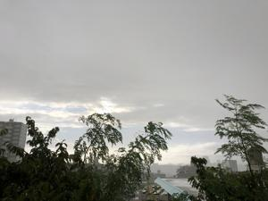
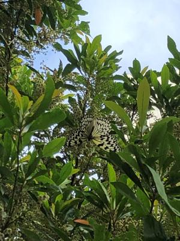
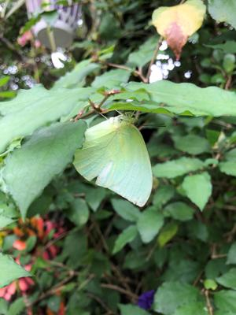
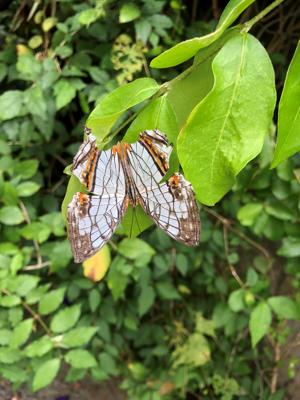
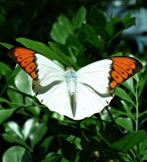

うるがいの話 ある日
最新: 黄金蝶とは【うるがいの話 ある日】とは 一日だけのプログです
『うるがいの話』の最新一日だけのプログで、通信料が少なく経済的だ。カニの画像をクリックすると全ての日付が載る『うるがいの話』サイトを表示します
|
|
【うるがいの話】 うるがい(ｳﾙｶﾞｲ urugai)とは、『もずくがに』の名前でとても大きくなります。 |
|---|---|
|
|
【カミマヤーの話】 猫のことを方言でマヤーといいます。カミマヤー（kamimayaa）とは、神の猫のことです。 |
|
【たながぁの音楽】 たながぁ（ﾀﾅｶﾞｰ tanagaa）とは手長えびのことで、何種類かあり大きいのは車 エビぐらいになります。 |

|
【ぶながぁの話】 ぶながぁ(ﾌﾞﾅｶﾞｰ bunagaa)とは、赤い髪の毛、赤い身体、そして身長は１ｍ２０ｃｍ ぐらい、川の蟹を食べているの目撃された。場所は沖縄県国頭郡大宜味村のと ある村僕の隣近所に住んでいる爺さんから、聞いた話です。 |
|
|
【ギーマの話】 ギーマ(giima)とは、山原の里山に咲くスズランに似た、 花を付けます。実は食べられます、 気が付くと口の周りが紫になっています。 |
2022年07月04日 (月）黄金蝶とは
16:09
   
飯嶋 和一『黄金旅風〔小学館文庫〕』より
海を渡り長崎の岬にたどり着こうとしていた。飛び疲れたのか蝶は高度を下げ
騎馬している平左衛門のところへまっすぐに向かってきていた。そして、いき
なり平左衛門の右の肩口に止まった。平左衛門は身じろぎもできず、翼の黒い
縁取りに入った細かな白斑と、朱みがかった翅に走っている漆黒の翅脈線、そ
して黒毛に包まれた黒い胴体にも細かな白点が散りばめられているのを横目で
確かめた。琉球人たちが黄泉の国から飛来する死者の化身と話している蝶に間
違いなかった。黄金蝶は、あたかも呼吸を整えるかのように平左衛門の肩上で
二、三度小さく翼を開いたり閉じたりした後、また何かに駆られるようにして
飛び立った。
この黄金蝶とは、なんだろうと考えてみた。私が蝶の中で一番綺麗だなと思っ
ている『ツマベニチョウ』ということに至った。ネットで調べているとなんと
大宜味村の蝶であることが分かった。この蝶は捕らえることが難しい。

部屋を片付けていたら古いＸＰのインストールＤＶＤが見つかった、で電話認
証するためフリーダイヤルに電話をすると電話できず、ん！、１１７（時報）
も繋がらなかった。そして、繋がったのは１４時頃だった、備忘録である。
１６時０３分 ビットコインの総資産 ￥７、４９４↑